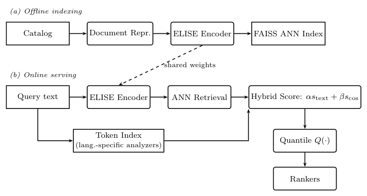
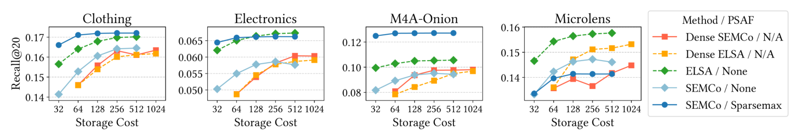
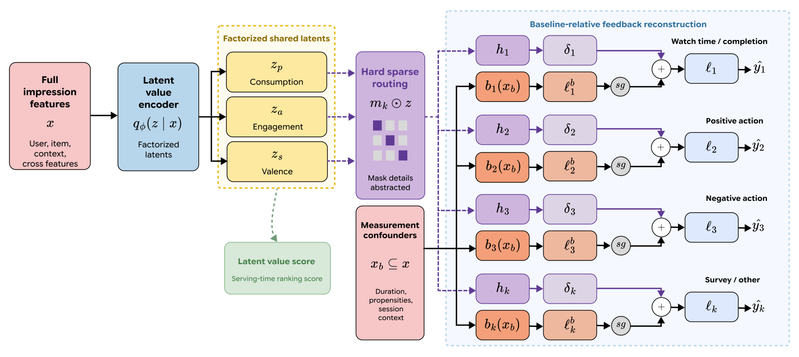
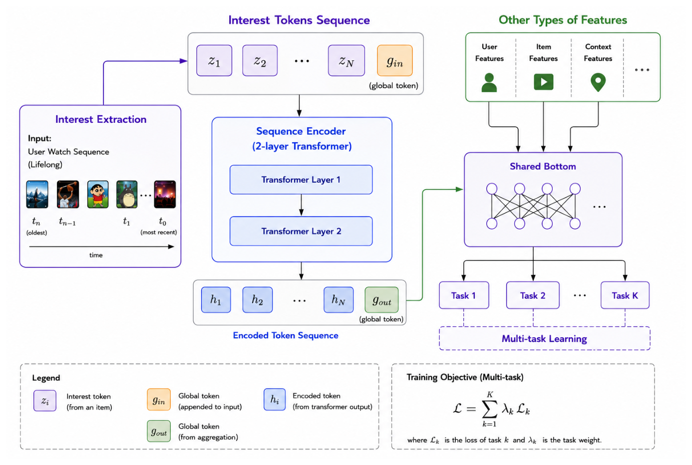
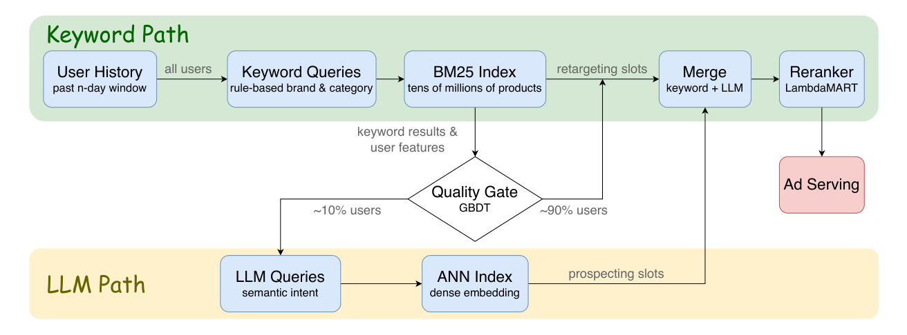
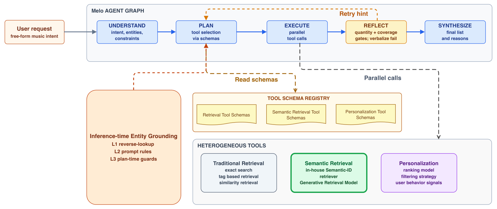
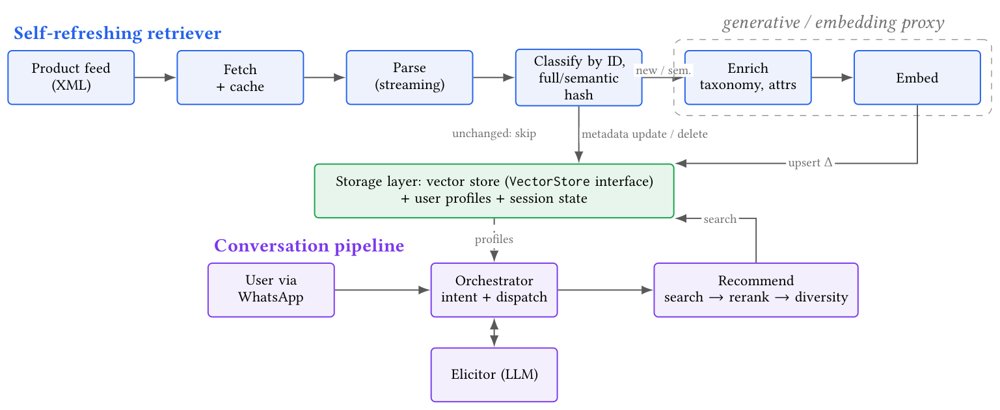

Search experience
Improve ranking for specialty, drug, KOL, conference, and recency; test personalization.
Task 2 · ACM RecSys 2026 industry papers inform the proposal
We currently use Elasticsearch to power site search. While functional, search relevance and ranking need improvement to help users quickly find the most valuable content. Additionally, we want to integrate the AI Assistant so that users can see both search results and direct answers to their queries in one unified experience.
The cited RecSys results come mainly from music, video, ads, e-commerce, and recommendation. They motivate local tests; they are not medical-search forecasts.
Improve ranking for specialty, drug, KOL, conference, and recency; test personalization.
Show results with direct answers, citations, and links back to source content.
Minimize downtime and weigh engineering effort against business value.
First improve the candidates. Then answer from them.
01 · Evaluate before ranking
Build a fixed query set with relevance labels. Use an LLM judge as an aid, then check a sample with people.
NDCG@10 on the judged query set.
No-result rate and click-through rate.
Log query, shown results, their positions, clicks, and saves.
Without impression positions, clicks mix relevance with exposure.
Later measures: serendipity, catalog coverage, diversity, and demographic parity.
A real-estate study reported 94%/96% agreement with human judgments. Use this as support for sample review, not judge autonomy.
LLM-Based Re-Ranking for Real Estate SearchNaming the optimization shifted scores by up to +0.89 on identical lists.
Intent-Description Anchoring Bias in LLM-as-a-Judge Evaluation of Recommendation SystemsTone changed judge severity more than ranking; maximum ΔNDCG@10 was 0.011.
Should I Be Polite to My LLM Relevance Judge? Tone as a Severity Operating-Point ShiftThe music-judge authors also recommend human review. These findings come from other domains.LLM-as-a-Judge for Evaluating System Responses in Conversational Music Recommendation
02 · Make the content searchable
Add specialty, sub-specialty, drug, key opinion leader (KOL), conference, and date fields. Query text can then match the concept, not only the words in a title.
“pembrolizumab ASCO 2026” → drug + conference + year
Test query expansion against the original query on the judged set.
Inspect the Task 1 schema first. Add missing fields, route uncertain values for review, and backfill before ranking depends on them.
03 · Expand candidate recall
BM25 preserves exact medical terms; dense Two-Tower retrieval can cover wording mismatch. Union and deduplicate candidates, then cap semantic results.
Apple Music reported +2.28% conversion, 86.0% fewer no-result queries, and +7.93% on tail queries. These are music-search results, not medical-search estimates.
Snap's rule-built BM25 queries beat LLM-generated queries on recall (56.0% vs 42.5%), another reason to test the lexical path.
SMART: LLM-Augmented Hybrid Retrieval for Dynamic Product Ads
A top-k model kept 32/1,024 dimensions and reported 16.6%–75.5% higher cold-item NDCG@20 than dense vectors at comparable storage. For 63,001 items, sparse CSR used 12.4 MB versus 16.1 MB for dense vectors; training cost rose 15%–20%. No latency result was reported.
Learning Sparse Representations of Multimodal Content for Enhanced Cold Item RecommendationA preliminary SAE abstract beat dense alternatives in 70/78 settings across 13 datasets. Neither paper tests SPLADE/ELSER-style text search or medical text. Compare sparse-field retrieval and SAE ranker features against the local hybrid at matched index size and acceptable p95 latency.
Sparse Autoencoders as Semantic Domain Adapters for Recommender Systems
04 · Rank retrieved candidates
Train a gradient-boosted learning-to-rank model such as LambdaMART on the union. Candidate retrieval and reranking are separate jobs.
Conference phase is a task-specific feature hypothesis. Test it on judged queries.
Its hybrid retriever raised purchases from the component by 20.4%; the reranker added a further 12.7%. Removing structured metadata reduced offline AUROC from 0.656 to 0.638; its text embedding added little.
Hybrid Retrieval and Multimodal Reranking for Item-to-Item Recommendation in a C2C MarketplaceA fixed YouTube Music boost was −0.74% and not significant. An uncertainty-based boost reported +7.75%. Neither result predicts conference-search gains.
Breaking the Loop: An Empirical Comparison of Strategies for Novelty and Freshness in YouTube MusicUse logged positions; clicks reflect the old ranker's exposure as well as relevance.

05 · Answer from retrieved evidence
Example chat with RecSys papers. In production, the answer and visible results come from the same retrieved medical records.
Results already shown
The answer uses the same candidates. If they do not support a reply, keep the results and show no answer.
What do sparse representations show for cold-item retrieval?
One top-k method used 32 of 1,024 dimensions and reported 16.6%–75.5% higher cold-item NDCG@20 than dense vectors at comparable storage. This was recommendation research, not medical text search.
Learning Sparse Representations of Multimodal Content for Enhanced Cold Item Recommendation ↗A preliminary sparse-autoencoder abstract beat dense alternatives in 70 of 78 settings across 13 datasets.
Sparse Autoencoders as Semantic Domain Adapters for Recommender Systems ↗UX trade-off: keep the reply short; use source titles for detail. Results render first while the answer streams.
Latency examples: Melo's retry cost was 15.9 seconds at P50; an LLM reranker added 4.2 seconds in real-estate search.
Melo: A Production LLM-Powered Music Recommendation Agent ↗ LLM-Based Re-Ranking for Real Estate Search ↗06 · Personalize carefully
Start with an optional user vector from clicked or saved items as two features in the existing ranker. Apple TV reported +8.63% NDCG@10 for 1–3-character prefixes and +2.13% to +4.37% across history lengths.
Personalizing Incremental Video Search with Hybrid Text and ID EmbeddingsKeep a baseline path for new users and people who opt out.
A declared-specialty fallback is a product choice. Set consent, retention, and deletion rules first.

With history and consent, add the user signal to the shared ranker. With no history or opt-out, use baseline features.
Both cited systems are video search/recommendation, not medical search. Check gains by history length and track diversity.
07 · Gate and constrain the assistant
Use a cheap query gate. Navigational searches stay on results; selected question-like queries may enter a bounded tool workflow.



A single-setting design-space study found that removing structured retrieval access cut success by about a third; treat it as weak evidence. A Design-Space Approach to Robust Agentic Conversational Recommendation
These are patterns from ads, music, and commerce. Check answer support, source links, latency, and abstention in the local system.
08 · Evaluation and rollout
Keep search relevance as the release gate. If video is in scope, add watch and coverage signals as behavioral diagnostics, not ground-truth relevance labels.
Offline NDCG@10; online no-result rate and CTR. Log impressions and positions so CTR is read in exposure context.
Use foreground dwell/watch time, normalized by video length, as an implicit-interest proxy. Track videos watched in sequence per session as a rough session-length proxy; log elapsed time separately.
Author coverage@K is the share of active, eligible authors represented in top K across a fixed query window. Track unique items surfaced over that window too; break down by specialty and format.
Judge set + impression logging.
Extend fields; backfill gaps.
Test dense beside BM25.
Use judged labels and exposure.
Optional features with fallback.
Gate, evaluate, then ship.
Dwell and session length can reflect autoplay or idle tabs; do not optimize them alone. Update catch-up and rollback freshness are implementation details, not paper results. Apple's rebuild cadence is an example, not a target. Multilingual Semantic Retrieval for Apple Music Search